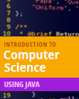

Command Line Interaction
This section covers command line interaction.
Introduction to creating programs, reading input and writing output.

Java code developed in the videos from this lesson.
Lecture presentation
Lecture presentation
Lecture presentation